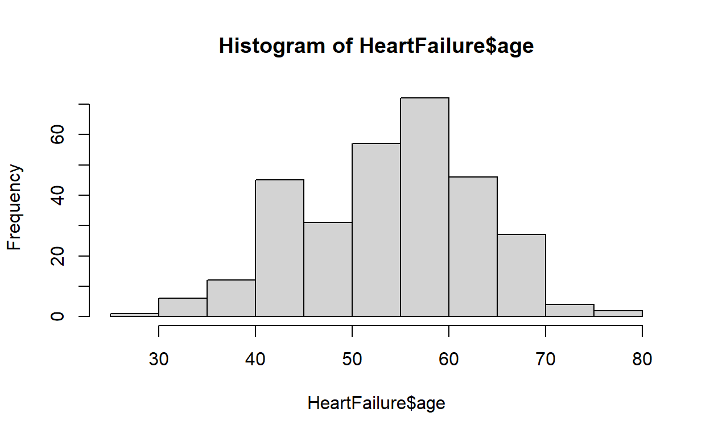

In this lab, you will practice creating and interpreting data visualizations for different variables types.
Why do we do make histograms? The practical reason is that data visualization is often better than a table for quickly assessing the essential features of a variable. With a histogram, you can quickly identify the value that occurs the most often in the data (highest bar). You can see the range of values and if your data is skewed or not. You can find any observations that are possible outliers or even errors (a heart rate of 0 is not a possible value in living patients).
To create a histogram, you have to split the data into intervals called bins. Then we count the number of observations (frequency or count) in each bin. The number of observations in each interval determines the height of the bar for each interval (as long as all the bins are the same size).
Thankfully this is no longer done by hand. Instead, we will use the hist() function in R. This function creates very basic histograms quickly. It also automatically choices the number of bins that it thinks is best for the variable (works most of the time, but it is not perfect). If you want to know more about the hist() function, check out RDocumentation for more information. R is excellent, but it is not smart and will let you make a histogram with just about any variable. It is up to you to make sure you are using the appropriate variables with the hist() function.
# age is a continous/discrete variable so using a histogram is appropriate.
hist(HeartFailure$age)
# cut age up into 11 bins since that is the number the hist() function uses
# Tell R you want a table of the age variable.
table(cut(HeartFailure$age, breaks = c(25,30,35,40,45,50,55,60,65,70,75,80)))
(25,30] (30,35] (35,40] (40,45] (45,50] (50,55] (55,60] (60,65] (65,70] (70,75]
1 6 12 45 31 57 72 46 27 4
(75,80]
2 Using the histogram above as an example use the steps to interpret a histogram and get a feel for what to look for.
Steps to Interpret a Histogram:
1. Find the central bin (for normally distributed data it will be one of the tallest)
2. Look to see if the data is skewed left or right
3. Look at the range of the data (first and last bin)
4. Identify possible outliers (first or last bins that are not close to the other bins) or errors (values that are not biologically possible)
In the next section, you will make and interpret some histograms.
To make a basic histogram, we will use the hist() function. The code to create a basic histogram is hist(dataset$variablename), so for example to make a histogram of age the R code would be hist(HeartFailure$age).
Instructions: Take a quick look at the data we will be using by running the code chunk. Use the output to answer the quiz questions. It is the same data from the first lab. The data dictionary is also included.
age: age in years
sex: (1 = male; 0 = female)
trestbps: resting blood pressure (in mm Hg on admission to the hospital)
chol: serum cholesterol in mg/dl
fbs: (fasting blood sugar > 120 mg/dl) (1 = true; 0 = false)
thalach: maximum heart rate achieved
exang: exercise induced angina (1 = yes; 0 = no)
oldpeak: ST depression induced by exercise relative to rest
# The head() function allows you to print a specific number of rows starting from the top of the data
# The tail() function does the same thing but from the bottom
head(HeartFailure,10)
# You just have to click Run Code to see the dataDon’t forget to write your answers down so that you can answer the questions on the eLC quiz for this lab. Question 1 here will correspond to question 1 on the eLC quiz
# age is a continous/discrete variable so using a histogram is appropriate.
hist(HeartFailure$age)# make a histogram for chol.# make a histogram for trestbps.# make a histogram for oldpeak.As long as all the bins are the same (their widths don’t vary), they can be defined by how many there are or by their width. Regardless of how the bins are defined, it is crucial that there are not too few or too many. There are no hard set rules for how many bins you should use, but there are four standard calculations (see below) to help you decide on the number of the bins. (\(n\) in the formulas below are the number of observations)
It is important to note:
Methods 1 and 2 (Sturges and Rice) only account for the number of observations recorded for a variable. As a result, the number of suggested bins will be the same for all the variables as long as there are no missing observations.
Methods 3 and 4 (Scott and Freedman-Diaconis) use the characteristics of the variable (min, max, and standard deviation or interquartile range (IQR)). So the suggested number of bins will be different for each variable.
# The print() function prints whatever is inside.
# I am using the print(), so it is clear which method was used to generate the suggested number of bins
# Here are the suggested bin sizes using the formula's above
# 1 Struges method.
print("Sturges Method")
log2(303)+1
# 2 Rice method.
print("Rice Method")
2*303^(1/3)
# 3 Scott method for age
print("Scott Method")
(max(HeartFailure$age)-min(HeartFailure$age))/(3.5*(sd(HeartFailure$age)/303^(1/3)))
# 4 Freedman-Diaconis for age
print("Freedman-Diaconis Method")
(max(HeartFailure$age)-min(HeartFailure$age))/(2*(IQR(HeartFailure$age)/303^(1/3)))To answer the question below change the code for method 4 to calculate the suggested number of bins for the “oldpeak” variable
Select different variables and see how the number of bins impacts the appearance by moving the slider to increase or decrease the number of bins. Refer to the data dictionary to make sure you are using the right variable type. See what happens when you make a histogram with the wrong variable type. Change the variables in the bin formulas above and see what the histograms look like when you use each of the four indicated bin numbers. Remember you only have to change methods 3 and 4. After you have had some fun playing with the histograms answer question 8.
age: age in years
sex: (1 = male; 0 = female)
trestbps: resting blood pressure (in mm Hg on admission to the hospital)
chol: serum cholesterol in mg/dl
fbs: (fasting blood sugar > 120 mg/dl) (1 = true; 0 = false)
thalach: maximum heart rate achieved
exang: exercise induced angina (1 = yes; 0 = no)
oldpeak: ST depression induced by exercise relative to rest
In this lab, you completed 7 exercises and answered 8 quiz questions.
The lab covered 3 topics:
Excellent work! You are done with the lab. Don’t forget to record your answers and take the eLC quiz to get credit